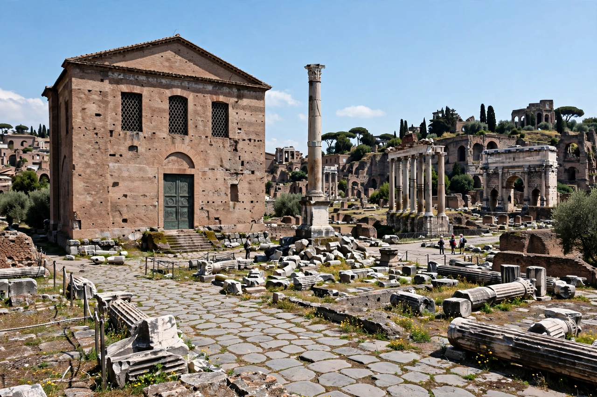

Roman Senate

The Roman Senate (Latin: Senātus Rōmānus) was a governing and advisory assembly in ancient Rome, and one of the most enduring institutions in Roman history, surviving from the foundation of the city in 753 BC through the Kingdom, the Republic and into the Empire and beyond. Its members, senators, were drawn from Rome's leading families and, later, from former magistrates.
Kingdom and early Republic
Tradition held that Romulus appointed the first hundred senators, known as patres ("fathers"), from whom the patrician class claimed descent. Under the kings the Senate was an advisory council. After the expulsion of the last king (traditionally 509 BC) and the founding of the Republic, the Senate grew in power as Rome's permanent deliberative body, while magistrates held office for only a year.
Role in the Republic
Formally, the Senate could not pass laws — legislation belonged to the popular assemblies — but its decrees (senatus consulta) carried enormous weight. It controlled state finances, assigned provinces and commands to magistrates, directed foreign policy, received embassies, and administered Italy and the growing empire. In emergencies it could pass the senatus consultum ultimum, urging magistrates to defend the Republic. Membership, about 300 in the early Republic, rose to around 600 after Sulla's reforms and higher still under Caesar. Senators sat for life unless expelled by the censors for misconduct.
Socially, the Senate embodied the aristocratic order: entry came through election to the quaestorship (after Sulla) and a property qualification, and its proceedings were dominated by ex-consuls. Its resistance to reform contributed to the crises of the late Republic — the era of the Gracchi, Sulla's dictatorship, and the civil wars that ended with Caesar's assassination in 44 BC, an act carried out by senators in the name of the Republic.
Empire
Under Augustus and his successors the Senate retained prestige and some functions — administering certain provinces, serving as a high court, and formally conferring imperial powers — but real authority shifted to the emperor. Senators remained wealthy and influential, and the Senate persisted in Constantinople as well as Rome. The Roman Senate faded in the 6th–7th centuries AD; the last known acts date to around AD 603.
Legacy
The Senate's name and model — an upper house of experienced legislators — influenced later institutions, including the United States Senate and many modern legislatures (see Bundesrat for a modern federal council). The abbreviation SPQR (Senatus Populusque Romanus, "the Senate and People of Rome") remains an emblem of the city.